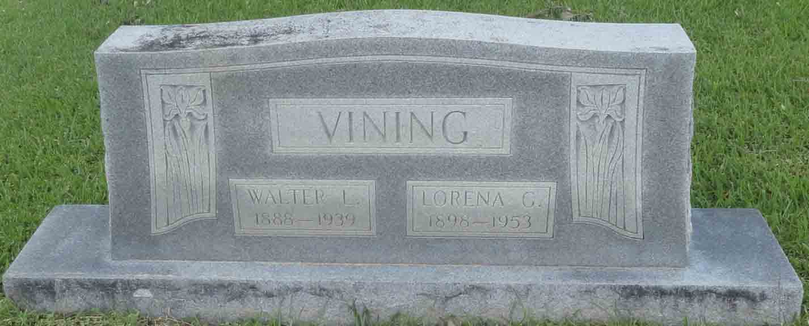
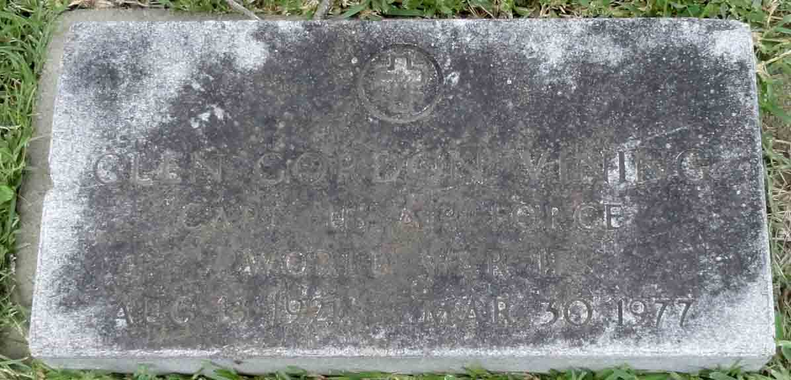
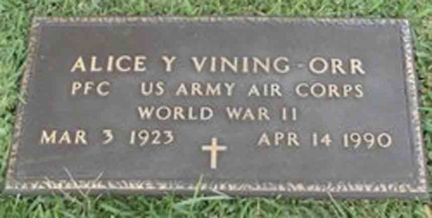

Census Data
| 1920 | 1930 | 1940 | |
| Walter Lonnie Vining | ? | 41 | dead |
| Lorena (Grubbs) Vining | ? | 31 | 42 |
| Walter Clifford Vining | 9 | 19 | |
| Glen Gordon Vining | 8 | 18 | |
| Alice Yvonne Vining | 6 | 16 | |
| Lonnie Gene Vining | 2 | 12 | |
| Floyce Nelwyn Vining | 7 m. | 10 | |
| Francis Marvin Vining | 4 | ||
| William Vining | 10 m. |


Death Data
Headstone for Walter Lonnie Vining and Lorena Grubbs, in New Forest Cemetery, Forest, West Carroll Parish, Louisiana (from Find A Grave):

